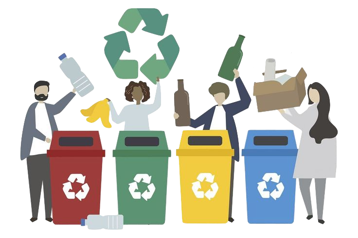

Where does your waste go??
Compostable Waste
Compost, derived from organic waste through decomposition, serves as a natural fertilizer and soil enhancer.
It improves soil structure, retains water, and promotes plant growth, offering a sustainable way to recycle organic waste.
Recyclable Trash
Recyclable materials undergo a process where they are transformed into new products with various applications.
For instance, recycled paper can be used to produce new paper goods, recycled glass finds its way into manufacturing new containers,
various items are crafted from recycled plastics, and recycled metals contribute to the creation of new metal products.
This recycling loop helps conserve resources, reduce waste, and promote sustainability across different industries.
Non-Recyclable Trash
Non-recyclable trash is sent to landfills for controlled disposal, where it is compacted to minimize environmental impact.
Alternatively, waste-to-energy facilities incinerate non-recyclable waste to generate energy.
This responsible management helps minimize the environmental footprint of non-recyclable materials.
Electronic Waste (E-Waste)
E-waste is disassembled, and valuable materials are extracted for reuse, helping recover precious metals and reduce the need for new raw materials.
The recycled materials can be used to manufacture new electronic products, fostering a more sustainable approach in the electronics industry.
Harzadous Waste
Hazardous waste is treated in specialized facilities through methods like chemical treatment or incineration for safe disposal.
This ensures responsible management, preventing environmental contamination and safeguarding public health.
